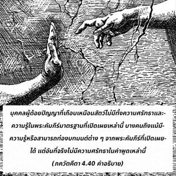

แต่บุคคลผู้อยู่ในอวิชชา ไม่มีความศรัทธา และสงสัยในพระคัมภีร์ที่เปิดเผยจะไม่บรรลุถึงจิตสำนึกแห่งองค์ภควานฺ พวกเขาตกต่ำลง สำหรับดวงวิญญาณผู้มีความสงสัยจะไม่มีความสุขทั้งโลกนี้และโลกหน้า

จากพระคัมภีร์มาตรฐาน และเชื่อถือได้ที่เปิดเผยมากมาย ภควัท-คีตา ดีที่สุด บุคคลผู้ด้อยปัญญาที่เกือบเหมือนสัตว์ ไม่มีทั้งความศรัทธา และความรู้ในพระคัมภีร์มาตรฐานที่เปิดเผยเหล่านี้ บางคนถึงแม้มีความรู้ หรือสามารถท่องบทมนต์ต่างๆ จากพระคัมภีร์ที่เปิดเผยได้ แต่อันที่จริงไม่มีความศรัทธาในคำพูดเหล่านี้ และถึงแม้ว่าบางคนมีความศรัทธาในพระคัมภีร์ เช่น ภควัท-คีตา แต่ไม่เชื่อ หรือไม่บูชาบุคลิกภาพสูงสุดแห่งพระเจ้าศฺรีกฺฤษฺณ บุคคลเช่นนี้ไม่มีจุดยืนในกฺฤษฺณจิตสำนึก พวกเขาตกต่ำลง จากทั้งหมดที่กล่าวมานี้ พวกที่ไม่มีความศรัทธา และมีความสงสัยอยู่เสมอจะไม่พัฒนาอะไรเลย มนุษย์ผู้ไม่มีความศรัทธาในองค์ภควานฺ และพระราชดำรัสที่เปิดเผยของพระองค์จะไม่มีอะไรดีในโลกนี้ หรือโลกหน้า และจะไม่มีความสุขอันใดเลย ฉะนั้น เราควรปฏิบัติตามหลักธรรมของพระคัมภีร์ที่เปิดเผยด้วยความศรัทธา จากนั้นยกระดับขึ้นไปสู่ระดับแห่งความรู้ ความรู้นี้เท่านั้นจะช่วยส่งเสริมเราไปสู่ระดับทิพย์แห่งความเข้าใจจิตวิญญาณ อีกนัยหนึ่ง บุคคลผู้มีความสงสัยจะไม่มีจุดยืนในความหลุดพ้นของดวงวิญญาณ ดังนั้น เราควรปฏิบัติตามรอยพระบาทของ อาจารฺย ผู้ยิ่งใหญ่ที่อยู่ในสายปรัมปราและบรรลุถึงความสำเร็จ